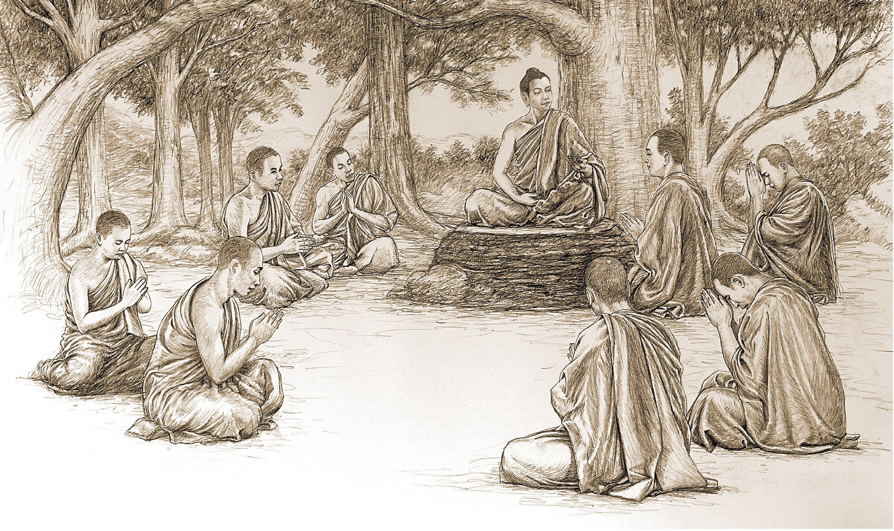
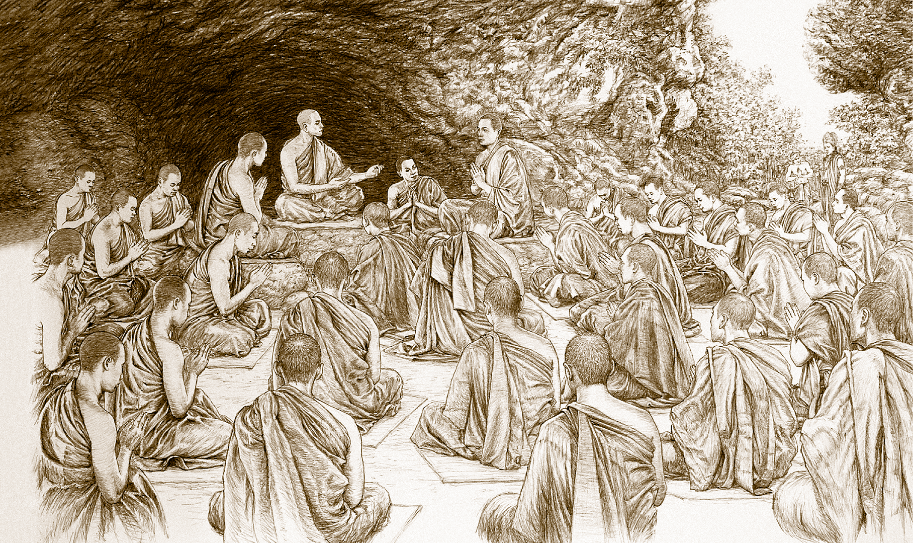
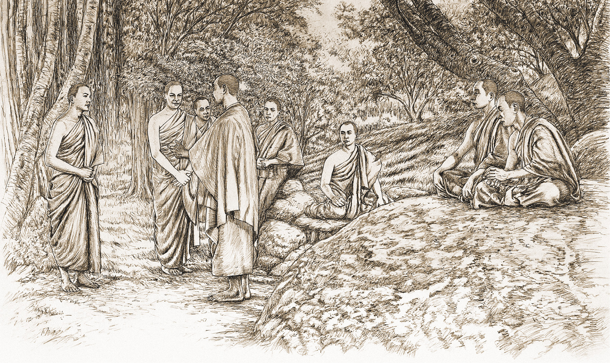
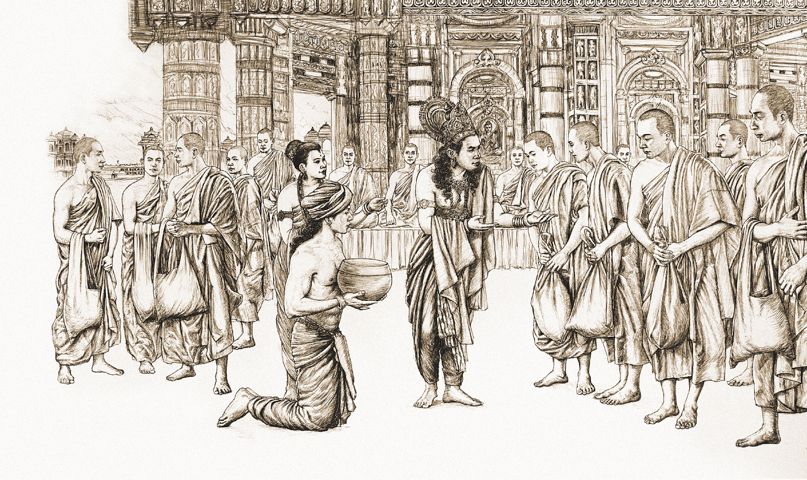
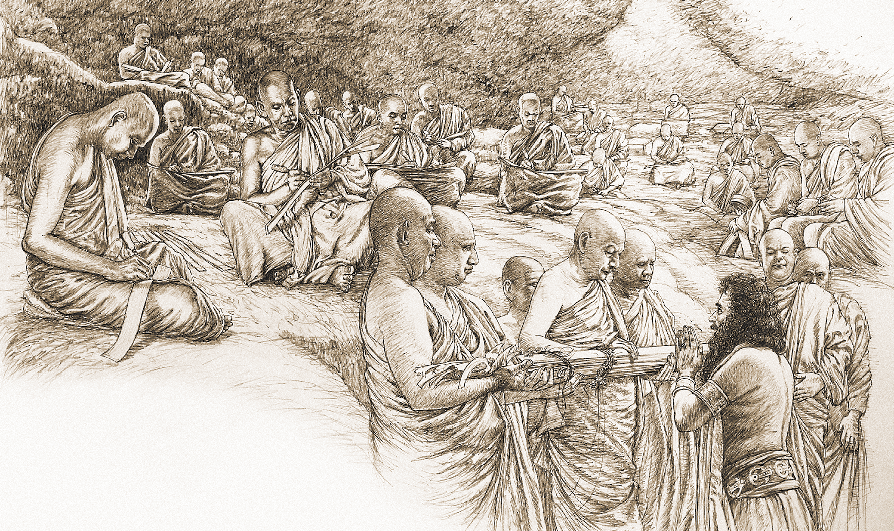
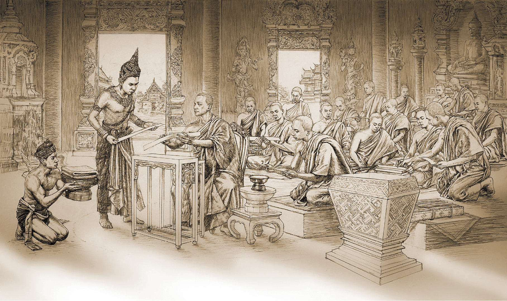
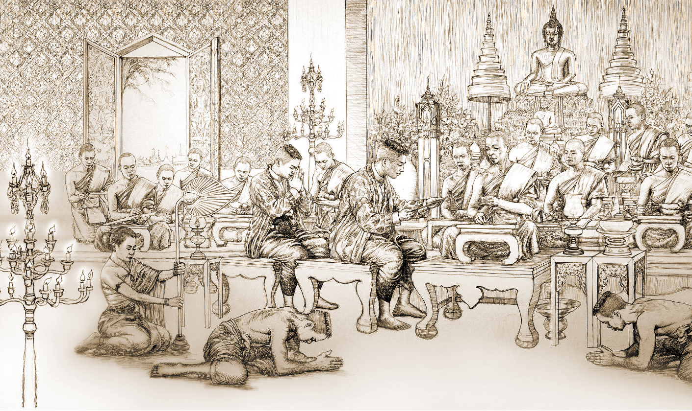

คำปรารภ
พระไตรปิฎก คือคัมภีร์จารึกคำสอนของพระพุทธเจ้า ที่เรียกกันว่า พระพุทธศาสนา พระพุทธเจ้าทรงเรียกคำสั่งสอนของพระองค์ว่า ธรรมและวินัย หรือเรียกรวมว่า พระธรรมวินัย ธรรมคือคำสั่งสอนอันเป็นข้อปฏิบัติสำหรับคนทั่วไปไม่ว่าจะเป็นคฤหัสถ์หรือบรรพชิต ส่วนวินัยคือ คำสั่งสอนอันเป็นข้อปฏิบัติสำหรับบรรพชิต หรือผู้อุปสมบทในพระพุทธศาสนา พระพุทธเจ้าทรงสั่งสอนพระธรรมวินัยด้วยภาษามคธ หรือภาษาบาลี อันเป็นภาษาของชาวมคธ หรือ
ประเทศมคธในครั้งกระนั้น เพราะฉะนั้น คำสั่งสอนของพระพุทธเจ้าหรือพระธรรมวินัย
จึงได้รับการทรงจำ และถ่ายทอดสืบ ๆ กันมาด้วยภาษามคธ หรือภาษาบาลี
ในครั้งพุทธกาล คือเวลาที่พระพุทธเจ้ายังมีพระชนม์อยู่ พุทธสาวกทั้งหลายก็ได้
ช่วยกันเก็บ รักษาพระธรรมวินัย หรือคำสั่งสอนของพระพุทธเจ้าไว้ในใจ คือจำไว้ แล้วก็
บอกเล่าสืบ ๆ กันมาจากอาจารย์สู่ศิษย์ เรียกว่าแบบมุขปาฐะ คือคำสั่งสอนที่ถ่ายทอดกันมา
ทางปาก
หลังจากพระพุทธเจ้าเสด็จดับขันธปรินิพพานแล้วได้ ๓ เดือน คณะสงฆ์โดยการนำ
ของพระมหากัสสปเถระปรารภการกล่าวจาบจ้วงพระธรรมวินัยของภิกษุรูปหนึ่ง จึงได้ประชุมกันทำสังคายนาพระธรรมวินัย คือรวบรวมเรียบเรียงพระธรรมวินัยเข้าไว้เป็นหมวดหมู่ เพื่อความสะดวกในการทรงจำและการสืบทอดต่อมา
ครั้นพุทธปรินิพพานล่วงแล้วราว ๑๐๐ ปี ได้เกิดความคิดเห็นและการปฏิบัติที่ผิดเพี้ยนไปจากพระธรรมวินัยขึ้นในภิกษุบางหมู่ คณะสงฆ์จึงได้ประชุมทำสังคายนาพระธรรมวินัย
คือชำระสะสางข้อผิดเพี้ยนที่เกิดขึ้น ให้หมดไปจากพระธรรมวินัย แล้วจึงได้ทรงจำสืบทอด
แบบมุขปาฐะกันต่อมา
ครั้นพุทธปรินิพพานล่วงแล้วราว ๒๐๐ ปีเศษ ได้เกิดทิฏฐิความเห็นที่ผิดเพี้ยน
จากพระธรรมวินัยขึ้นในหมู่ภิกษุบางพวกอีก เป็นเหตุให้สงฆ์เกิดการแตกแยกกัน คณะสงฆ์
โดยการอุปถัมภ์ของพระเจ้าอโศกมหาราช จึงได้ทำสังคายนาพระธรรมวินัยชำระสะสางทิฏฐิ
ความเห็นผิดนั้น พร้อมทั้งได้จัดระเบียบพระธรรมวินัยใหม่อีกครั้งหนึ่ง โดยจัดพระธรรมวินัย หรือคำสั่งสอนของพระพุทธเจ้าเป็น ๓ หมวดใหญ่ เรียกว่า ๓ ปิฎก หรือไตรปิฎก คือคำสั่งสอน อันเป็นข้อปฏิบัติสำหรับบรรพชิตโดยเฉพาะรวมไว้หมวดหนึ่งเรียกว่า วินัยปิฎก หรือเรียก
สั้น ๆ ว่า พระวินัย คำสั่งสอนอันเป็นข้อปฏิบัติทั่วไปสำหรับทุกคน รวมไว้หมวดหนึ่งเรียกว่า
สุตตันตปิฎก หรือเรียกสั้น ๆ ว่า พระสูตร คำสั่งสอนที่เป็นการแสดงเฉพาะข้อธรรมล้วน ๆ
ไม่กล่าวถึงบุคคล เหตุการณ์ และสถานที่ รวมไว้หมวดหนึ่งเรียกว่า อภิธัมมปิฎก หรือ
เรียกสั้น ๆ ว่า พระอภิธรรม คำว่าไตรปิฎก จึงเกิดมีขึ้นเป็นครั้งแรกในการสังคายนาครั้งที่ ๓ นี้หลังการสังคายนาครั้งที่ ๓ พระพุทธศาสนาได้เริ่มเผยแผ่ไปสู่ดินแดนต่าง ๆ นอกชมพูทวีป
(หรือนอกประเทศอินเดีย) พระพุทธศาสนาสายหนึ่งได้มาประดิษฐานมั่นคงขึ้นในเกาะลังกา
(คือประเทศศรีลังกาปัจจุบัน)
ถึงราวพุทธศักราช ๔๕๐ คณะสงฆ์ในเกาะลังกาพิจารณาเห็นว่า ความทรงจำของมนุษย์โดยทั่วไปเสื่อมลง พระไตรปิฎกที่สืบทอดกันมาแบบมุขปาฐะนั้น หากไม่ได้มีการจดจารึกลง
เป็นตัวอักษรไว้ กาลต่อไปภายหน้าก็อาจจะลบเลือนเสื่อมสูญไปได้ ฉะนั้น คณะสงฆ์ในเกาะลังกาจึงได้ประชุมกันทำสังคายนาพระไตรปิฎก คือตรวจชำระและจารึกลงเป็นตัวอักษรในใบลาน
ก่อให้เกิดมีคัมภีร์พระไตรปิฎกขึ้นเป็นครั้งแรกในโลก
คัมภีร์พระไตรปิฎกที่เกิดขึ้น ณ เกาะลังกาในครั้งนั้นก็คือ พระไตรปิฎกภาษามคธ
หรือภาษาบาลี ที่จารึกลงในใบลานด้วยอักษรสิงหล (คืออักษรภาษาของชาวลังกา)
เมื่อพระพุทธศาสนาแผ่ขยายจากลังกาไปสู่ประเทศต่าง ๆ เช่น มอญ พม่า ไทย ลาว ประเทศต่าง ๆ ที่รับพระพุทธศาสนาไปจากลังกาก็ได้คัดลอกหรือถ่ายทอดพระไตรปิฎก
ภาษาบาลี ไปจากลังกาโดยการคัดลอกลงในใบลานด้วยอักษรในภาษาของตน จึงทำให้เกิดมี
พระไตรปิฎกภาษาบาลี ฉบับอักษรมอญ ฉบับอักษรพม่า ฉบับอักษรไทย เป็นต้นขึ้น
สำหรับในประเทศไทยสมัยโบราณ นิยมเขียนภาษาบาลีด้วยอักษรขอม ฉะนั้น
คัมภีร์พระไตรปิฎกของไทยโบราณ จึงเขียนลงในใบลานด้วยอักษรขอม มาถึงสมัยรัชกาลที่ ๓ แห่งกรุงรัตนโกสินทร์ พระบาทสมเด็จพระจอมเกล้าเจ้าอยู่หัว ขณะทรงดำรงพระอิสริยยศเป็น สมเด็จพระเจ้าน้องยาเธอ เจ้าฟ้ามงกุฎสมมติเทวาวงศ์ และทรงผนวชเป็นพระภิกษุอยู่
ได้ทรงประดิษฐ์แบบอักษรเพื่อใช้เขียนภาษาบาลีแทนอักษรขอมขึ้น เรียกว่า หนังสืออริยกะ
มีลักษณะคล้ายอักษรวิธีโรมัน สำหรับใช้เขียนและใช้พิมพ์ภาษาบาลีแทนอักษรขอม หนังสืออริยกะนี้ได้ใช้แพร่หลายอยู่ในหมู่พระสงฆ์ธรรมยุตครั้งกระนั้น แต่เมื่อพระภิกษุเจ้าฟ้ามงกุฎฯ ทรงลาผนวชเสด็จเถลิงถวัลยราชสมบัติเป็น พระบาทสมเด็จพระจอมเกล้าเจ้าอยู่หัว
รัชกาลที่ ๔ แล้ว ความนิยมในการใช้หนังสืออริยกะก็จืดจางลงจนเลิกไปในที่สุด
ต่อมาพระบาทสมเด็จพระจอมเกล้าเจ้าอยู่หัว รัชกาลที่ ๔ ก็ได้ทรงพระราชดำริ
แบบอักษรไทยสำหรับใช้เขียนภาษาบาลีขึ้นอีก เรียกว่า แบบการยุต ซึ่งได้เริ่มใช้มาตั้งแต่
รัชกาลที่ ๔ และได้ใช้เป็นแบบในการพิมพ์พระไตรปิฎกอักษรไทยในสมัยรัชกาลที่ ๕ ซึ่งเป็น
การพิมพ์พระไตรปิฎกของพระพุทธศาสนาเถรวาทเป็นเล่มหนังสือขึ้นเป็นครั้งแรกในโลก
ตั้งแต่รัชสมัยพระบาทสมเด็จพระจุลจอมเกล้าเจ้าอยู่หัวเป็นต้นมา คนไทยจึงได้มี
พระไตรปิฎกภาษาบาลีอักษรไทย สำหรับใช้ในการศึกษาเล่าเรียนพระพุทธศาสนา แต่
พระไตรปิฎกภาษาบาลีที่พิมพ์ขึ้นในสมัยรัชกาลที่ ๕ นั้น พิมพ์ได้เพียง ๓๙ เล่ม ยังไม่ครบ
บริบูรณ์ ถึงรัชสมัยพระบาทสมเด็จพระปกเกล้าเจ้าอยู่หัว จึงทรงพระกรุณาโปรดให้จัดพิมพ์
พระไตรปิฎกภาษาบาลีอักษรไทยขึ้นอีกครั้ง และได้พิมพ์ส่วนที่ขาดไปให้ครบบริบูรณ์ด้วย
รวมเป็นคัมภีร์พระไตรปิฎกภาษาบาลีอักษรไทย ๔๕ เล่ม เรียกว่า พระไตรปิฎกฉบับสยามรัฐ เรียกเป็นคำบาลีว่า สฺยามรฏฺฐสฺส เตปิฏกํ นับเป็นพระไตรปิฎกฝ่ายเถรวาทฉบับสมบูรณ์ ที่ได้
จัดพิมพ์ขึ้นเป็นฉบับแรกของโลก
พระไตรปิฎกในประเทศไทยได้มีการแปลเป็นภาษาไทยมาแล้วแต่โบราณ แต่เป็น
การแปลเพียงบางเรื่องหรือบางส่วนตามที่ต้องใช้ประโยชน์เท่านั้น กระทั่งถึงพุทธศักราช ๒๔๘๓ คณะสงฆ์ โดยการอุปถัมภ์ของรัฐบาลจึงได้ดำเนินการแปลพระไตรปิฎกภาษาบาลีเป็นภาษาไทย เพื่อเป็นอนุสรณ์ในการฉลอง ๒๕ พุทธศตวรรษ พุทธศักราช ๒๕๐๐ และได้จัดพิมพ์เป็นอนุสรณ์งานฉลอง ๒๕ พุทธศตวรรษ พุทธศักราช ๒๕๐๐ จำนวน ๒๕๐๐ จบ เรียกว่า พระไตรปิฎก
ภาษาไทยฉบับหลวง นับเป็นพระไตรปิฎกภาษาไทยฉบับแรกของไทย
เนื่องจากพระไตรปิฎกจดจารึกไว้ด้วยภาษาบาลี ฉะนั้น ผู้ที่จะศึกษาพระไตรปิฎก
ได้รู้เรื่อง จึงต้องเป็นผู้รอบรู้เชี่ยวชาญในภาษาบาลีเท่านั้น ด้วยเหตุนี้ จึงหาผู้รอบรู้เชี่ยวชาญ
ในพระไตรปิฎกได้ยาก ยังผลให้หาผู้รอบรู้เชี่ยวชาญในพระพุทธศาสนาได้ยากไปตามกัน
ฉะนั้น แต่โบราณมา ผู้คนจึงมีความรู้สึกต่อพระไตรปิฎกว่า เป็นสิ่งที่ยากแก่การเรียนรู้ และ
ยากแก่การที่จะรู้และเข้าใจ ทั้งในด้านพยัญชนะคือภาษา และในด้านอรรถคือเนื้อหาและ
ความหมาย เป็นเหตุให้พระไตรปิฎก ถูกเก็บรักษาไว้เป็นของศักดิ์สิทธิ์ หนักเข้าก็กลายเป็น
สิ่งเคารพบูชาจนไม่มีคนกล้าแตะต้อง
ด้วยความรู้สึกฝังใจดังกล่าวนี้ แม้เมื่อมีการแปลพระไตรปิฎกเป็นภาษาไทยแล้ว
คนส่วนใหญ่ก็ยังคงมีความรู้สึกว่าพระไตรปิฎกเป็นสิ่งที่ยากแก่การเรียนรู้และยากแก่การเข้าใจ เป็นเหตุให้คนทั่วไปไม่กล้าที่จะอ่านหรือศึกษาพระไตรปิฎก
ด้วยความปรารถนาอย่างแรงกล้าที่จะช่วยให้พุทธศาสนิกชนชาวไทย ได้เรียนรู้
พระพุทธศาสนาจากพระไตรปิฎก หรือได้ศึกษาพระไตรปิฎกเพื่อที่จะได้เข้าถึงพระพุทธศาสนาอย่างถูกต้อง ชัดเจน ทั้งเพื่อที่จะทำให้เห็นว่า พระไตรปิฎกเป็นสิ่งที่ทุกคนสามารถศึกษาเรียนรู้ได้ ทั้งจะได้รับประโยชน์จากพระไตรปิฎกมหาศาล อาจารย์สุชีพ ปุญญานุภาพ จึงได้คิดจัดทำ
”พระไตรปิฎกฉบับสำหรับประชาชน„ ขึ้น โดยการย่อความจากพระไตรปิฎกฉบับภาษาบาลี
๔๕ เล่ม ให้เหลือเพียง ๕ เล่ม และพิมพ์เป็นลำดับมาดังนี้ คือเล่ม ๑ พิมพ์เมื่อสิงหาคม ๒๕๐๑
เล่ม ๒ พิมพ์เมื่อมกราคม ๒๕๐๒ เล่ม ๓ พิมพ์เมื่อมิถุนายน ๒๕๐๒ เล่ม ๔ พิมพ์เมื่อตุลาคม ๒๕๐๒ เล่ม ๕ พิมพ์เมื่อเมษายน ๒๕๐๓ รวมเป็น ๕ เล่มชุด จากสถิติการพิมพ์แสดงว่า
ท่านอาจารย์ คงเริ่มลงมือเรียบเรียง ”พระไตรปิฎกฉบับสำหรับประชาชน„ ราวเมื่อ พ.ศ. ๒๕๐๐
อันเป็นปีฉลอง ๒๕ พุทธศตวรรษ กระทั่งถึงพ.ศ. ๒๕๐๓ จึงเรียบเรียงจบบริบูรณ์ ใช้เวลา
เรียบเรียงประมาณสามปีเศษ ถึงพ.ศ. ๒๕๒๒ ได้มีผู้มีกุศลจิตจัดพิมพ์รวมเป็นเล่มเดียวจบ
แจกเป็นธรรมทาน นับเป็นการพิมพ์รวมเล่มครั้งแรก และต่อมาได้มอบให้มูลนิธิมหามกุฏ
ราชวิทยาลัย ในพระบรมราชูปถัมภ์ จัดพิมพ์รวมเล่มเผยแพร่ในราคาต่ำกว่าทุน วัตถุประสงค์และวิธีจัดทำ ”พระไตรปิฎกฉบับสำหรับประชาชน„ นี้ ท่านอาจารย์ได้กล่าวไว้ในคำนำในการพิมพ์ครั้งแรกแล้ว จึงไม่ขอกล่าวซ้ำ
ลักษณะโดยรวมของการจัดทำ ”พระไตรปิฎกฉบับสำหรับประชาชน„ คือ ให้ความรู้
เกี่ยวกับประวัติความเป็นมาของพระไตรปิฎกตั้งแต่เริ่มแรกจนถึงปัจจุบัน ให้ความรู้เกี่ยวกับ
ลักษณะของ พระไตรปิฎก ให้ความรู้เกี่ยวกับข้อความที่น่ารู้เบื้องต้นจากพระไตรปิฎก
ให้ความรู้เกี่ยวกับเนื้อหาโดยย่อของพระไตรปิฎกทั้ง ๔๕ เล่ม
เนื่องจากเป็นการย่อเนื้อความของพระไตรปิฎกบาลี ๔๕ เล่ม ให้เหลือเป็นหนังสือเล่มเดียว ฉะนั้น เนื้อความที่ซ้ำกันจึงตัดออก เนื้อความที่เป็นพลความหรือรายละเอียดปลีกย่อยก็ตัดออก คงไว้แต่เนื้อหาสาระที่เป็นใจความสำคัญ ด้วยเหตุนี้ เนื้อหาของพระไตรปิฎกบางเล่ม
จึงย่อไว้เพียงสั้น ๆ เพราะเนื้อหาซ้ำกับเล่มอื่นที่ย่อไว้แล้ว ฉะนั้น ”พระไตรปิฎกฉบับสำหรับประชาชน„ นี้ จึงเป็นเสมือนคู่มือสำหรับการศึกษาพระไตรปิฎกฉบับสมบูรณ์ คือมีเนื้อความ
เพียงพอที่จะให้รู้ว่า พระไตรปิฎกมีอะไรบ้าง และเพียงพอที่จะนำเอาไปใช้ประโยชน์หรือนำไปปฏิบัติ และถ้าประสงค์จะรู้รายละเอียดในบางเรื่องบางตอนมากไปกว่านี้ ก็มีพื้นฐานเพียงพอ
ที่จะไปอ่านหรือศึกษาพระไตรปิฎกฉบับสมบูรณ์ต่อไปได้
และเนื่องจากในการจัดทำและจัดพิมพ์ออกเผยแพร่ครั้งแรกนั้น ท่านอาจารย์
ทะยอยทำและทะยอยพิมพ์ออกทีละเล่มจนครบ ๕ เล่ม ฉะนั้น การจัดทำสารบาญก็ดี
การจัดข้อความภายในแต่ละเล่มก็ดี จึงอาจลักลั่นกันอยู่บ้าง ทั้งในด้านการใช้ถ้อยคำและการ
ตั้งชื่อหัวข้อ หัวเรื่อง เพราะไม่ได้ทำพร้อมกันทีเดียว
ฉะนั้น ในวาระครบ ๑๐๐ ปีชาตกาลของอาจารย์สุชีพ ปุญญานุภาพ ในปีพ.ศ. ๒๕๖๐ นี้ คณะทำงานมูลนิธิพระไตรปิฎกเพื่อประชาชน ร่วมกับสำนักงานคณะกรรมการตำราและวิชาการ มูลนิธิมหามกุฏราชวิทยาลัย ในพระบรมราชูปถัมภ์ จึงได้ร่วมกันดำเนินการตรวจทานและจัด
รูปเล่ม ”พระไตรปิฎกฉบับสำหรับประชาชน„ ของอาจารย์สุชีพ ปุญญานุภาพ ให้เรียบร้อยและสะดวกแก่การอ่านการค้นคว้ายิ่งขึ้น แล้วจัดพิมพ์ขึ้นใหม่ในลักษณะที่กะทัดรัดสวยงามสมแก่
ความเป็นพระคัมภีร์สำคัญของพระพุทธศาสนา เพื่อเป็นอนุสรณ์ในการนี้
ในการพิมพ์ครั้งนี้ คณะทำงานได้ตรวจชำระเนื้อความ จัดสารบาญ ปรับหัวข้อ
ถ้อยคำ หมายเลข ให้เป็นระบบเดียวกันตลอดเล่ม และจัดรูปเล่มให้สะดวกในการอ่านการ
ค้นคว้ายิ่งขึ้น โดยคงเนื้อหาไว้ตามต้นฉบับเดิมทุกประการ
ส่วนที่มีการแก้ไขเพิ่มเติมในการจัดพิมพ์ครั้งนี้ คือ
๑. สารบาญได้จัดทำเป็น ๒ ส่วน คือ สารบาญสรุป เพื่อให้ผู้อ่านรู้เนื้อหาของหนังสือแบบกว้าง ๆ หรือในแบบภาพรวมก่อน แล้วจึงถึงสารบาญสมบูรณ์ สำหรับให้ผู้อ่านค้นหาเรื่อง
ที่ต้องการอ่าน หรือเพื่อให้ผู้อ่านได้รู้รายละเอียดของเนื้อหาทั้งหมดที่มีอยู่ในหนังสือนี้
๒. ในเนื้อความย่อของพระไตรปิฎกบางเล่มที่ท่านอาจารย์ไม่ได้ใส่หัวเรื่องกำกับ
เนื้อความไว้ แต่ท่านใส่หัวเรื่องไว้ในสารบัญ ได้ยกเอาหัวเรื่องนั้น ๆ ในสารบาญไปใส่ไว้เหนือ
เนื้อความย่อนั้น ๆ ด้วย เพื่อให้สารบาญกับเนื้อความในเล่มตรงกัน
๓. เนื้อความของพระไตรปิฎกบางเล่ม มีการจัดแบ่งเป็นวรรค ๆ แต่ในเนื้อความย่อท่านอาจารย์ไม่ได้ใส่ชื่อวรรคกำกับไว้ที่เนื้อความย่อ แต่ใช้หมายเลขแทน จึงได้เพิ่มชื่อวรรค
นั้น ๆ ไว้เหนือข้อความของวรรคนั้น ๆ และใส่ไว้ในสารบาญด้วย เพื่อความสะดวกในการค้นหาของผู้อ่าน
๔. การใส่หมายเลขประจำหัวข้อหรือข้อความยังลักลั่นกัน จึงได้ปรับใหม่ให้เป็น
ระบบเดียวกัน ตามลักษณะของหัวข้อใหญ่ หัวข้อรอง หัวข้อย่อย
๕. เอกสารทางประวัติศาสตร์ เกี่ยวกับการชำระ การจารึก และการพิมพ์พระไตรปิฎก ในประเทศไทย ซึ่งท่านอาจารย์คัดมาจากเอกสารเก่านั้น ได้แก้ไขอักขรวิธีให้เป็นไปตาม
ต้นฉบับเดิม พร้อมทั้งได้ถ่ายต้นฉบับพระสมุดคำประกาศเทวดาครั้งสังคายนายในรัชกาลที่ ๑ และนำเอกสารเกี่ยวกับพระไตรปิฎกในรัชกาลที่ ๗ คือ พระราชหัตถเลขาในรัชกาลที่ ๗
พร้อมคำแปลอารัมภกถา พระไตรปิฎก มาพิมพ์ไว้ด้วย เพื่อความสมบูรณ์ในทางประวัติ
และเพื่อเป็นการอนุรักษ์ไว้ให้อนุชนได้เห็น
๖. การอ้างอิงพระไตรปิฎก ท่านอาจารย์ใช้พระไตรปิฎกสยามรัฐ ฉบับพิมพ์ครั้งแรกในรัชกาลที่ ๗ ซึ่งปัจจุบันหายาก ในการพิมพ์ครั้งนี้ ได้แก้ไขให้เป็นพระไตรปิฎกสยามรัฐ
ฉบับพิมพ์ล่าสุด คือ เมื่อ พ.ศ. ๒๕๕๖ และในการอ้างอิง ท่านอาจารย์เขียนไว้เพียงย่อ ๆ คือ
เล่ม/หน้า ในการพิมพ์ครั้งนี้ ได้แก้ไขให้ครบถ้วนขึ้น คือใส่อักษรย่อชื่อคัมภีร์ พร้อมด้วยเลขเล่ม เลขข้อ และเลขหน้า เช่น ที.ปา. ๑๑/๑๐๘/๑๓๙ (อ่านว่า ทีฆนิกาย ปาฏิกวรรค เล่ม ๑๑
ข้อ ๑๐๘ หน้า ๑๓๙) ทั้งนี้เพื่อสะดวกแก่การสืบค้นของผู้ต้องการ
๗. การอ้างอิงคัมภีร์อรรถกถา ท่านอาจารย์ใช้อรรถกถาฉบับพิมพ์ครั้งแรก ซึ่งปัจจุบันหายาก จึงได้ใช้เป็น อรรถกถาภาษาบาลี ฉบับพระราชพิธีมหามงคลเฉลิมพระชนมพรรษา ครบ ๕ รอบ ๑๒ สิงหาคม พ.ศ. ๒๕๓๕
๘. คำและข้อความที่เห็นว่าผู้อ่านทั่วไปอาจไม่คุ้นเคย หรืออาจเข้าใจยาก ในการพิมพ์ครั้งนี้ คณะทำงานได้ทำเชิงอรรถเพิ่มเติมขึ้นโดยใช้อักษรย่อ ม.พ.ป. หมายถึง ”มูลนิธิพระไตรปิฎกเพื่อประชาชน„ กำกับไว้เพื่อเป็นที่สังเกต พร้อมทั้งได้ปรับปรุงแผนภูมิ แผนผัง หัวข้อและ
เลขหน้าที่ใช้อ้างอิงภายในเล่มด้วย
๙. บันทึกทางวิชาการ ๖ ฉบับของท่านอาจารย์นั้น ในคราวนี้ ได้ใส่"ฉบับที่"
แต่ละฉบับไว้ด้วย เพื่อความสะดวกแก่ผู้อ่าน
๑๐. การพิมพ์ครั้งนี้ ได้เพิ่มภาพวาดเกี่ยวกับการสังคายนาครั้งสำคัญอันเนื่องกับ
ความเป็นมาของพระไตรปิฎกไว้ด้วยรวม ๗ ภาพ การวาดภาพในครั้งนี้พระอาจารย์ธีระพันธุ์
ธีรโพธิ (ลอไพบูลย์) ผู้วาด ได้พยายามศึกษาหาข้อมูลเกี่ยวกับการสังคายนาครั้งนั้น ๆ เช่น
ข้อมูลเกี่ยวกับสถานที่ สิ่งของเครื่องใช้ สภาพแวดล้อมและธรรมเนียมประเพณีในยุคนั้น
เพื่อประกอบจินตนาการในการสร้างสรรค์ภาพของการสังคายนาครั้งนั้น ๆ โดยได้เดินทางไปอินเดีย ลังกา และเชียงใหม่ เพื่อเก็บข้อมูลดังกล่าวมาประกอบ เพื่อให้คล้ายจริงมากที่สุด
ดังที่ปรากฏ อนึ่ง เนื่องจากภาพที่วาดขึ้น วาดโดยศิลปินไทย ผู้วาดจึงจงใจใส่บรรยากาศ
แบบไทย ๆ ลงไว้ในภาพด้วย เพื่อเป็นสัญลักษณ์ของยุคสมัย
๑๑. เพื่อเป็นอนุสรณ์ถึงท่านอาจารย์ในวาระครบ ๑๐๐ ปีชาตกาล ในการพิมพ์
ครั้งนี้ ได้เพิ่มประวัติสังเขปของอาจารย์สุชีพ ปุญญานุภาพ ผู้จัดทำ ”พระไตรปิฎกฉบับ
สำหรับประชาชน„ เล่มนี้ขึ้นเป็นครั้งแรกในโลกไว้ด้วย
๑๒. เพื่ออำนวยความสะดวกแก่ท่านผู้อ่านที่ต้องการค้นหาเรื่องต่าง ๆ ที่มีปรากฏอยู่ในหนังสือนี้ได้ง่ายยิ่งขึ้น การพิมพ์ครั้งนี้ ได้จัดทำสารบาญค้นคำ หรือดรรชนีค้นเรื่องให้
ละเอียดขึ้นกว่าเดิมอีก ราว ๕ - ๖ เท่า
อนึ่ง เพื่อประโยชน์สูงสุดในการอ่านการศึกษา ”พระไตรปิฎกฉบับสำหรับประชาชน„
ใคร่ขอแนะนำท่านผู้อ่านว่า ควรอ่านบันทึกทางวิชาการ ๖ ฉบับของท่านอาจารย์สุชีพ ปุญญานุภาพ ซึ่งเป็นภาคที่ ๕ ของหนังสือนี้ก่อน แล้วจึงอ่านเนื้อหาของ ”พระไตรปิฎกฉบับสำหรับประชาชน„ เพราะจะทำให้ท่านผู้อ่านทราบถึงวิธีการในการจัดทำ จุดมุ่งหมายในการจัดทำ และวิธีใช้
พระไตรปิฎกเล่มนี้ ตลอดถึงประโยชน์ที่จะพึงได้จากการอ่านพระไตรปิฎกฉบับนี้ด้วย
”พระไตรปิฎกฉบับสำหรับประชาชน„ นี้ นับเป็นพระไตรปิฎกย่อฉบับแรกของโลก
เพราะการย่อความพระไตรปิฎกบาลี ๔๕ เล่ม ให้คงเหลือเป็นหนังสือเล่มเดียวดังที่ท่าน
อาจารย์สุชีพ ปุญญานุภาพ ได้จัดทำขึ้นนี้ไม่เคยมีใครจัดทำขึ้นมาก่อน จึงกล่าวได้ว่า
”พระไตรปิฎกฉบับสำหรับประชาชน„ หรืออาจเรียกว่า พระไตรปิฎกย่อฉบับนี้ เปรียบเสมือน
เพชรเม็ดเอกของวงการพระพุทธศาสนาในประเทศไทย และจะเป็นมรดกทางปัญญา
มรดกทางพระพุทธศาสนา และมรดกทางวัฒนธรรมของไทยไปตลอดกาล
ในการตรวจทานและจัดเรียบเรียงเนื้อหาของ ”พระไตรปิฎกฉบับสำหรับประชาชน„
ขึ้นใหม่ในครั้งนี้ หากมีข้อบกพร่องประการใดในการจัดพิมพ์ คณะทำงานขอน้อมรับคำแนะนำจากท่านผู้อ่านด้วยความเคารพ เพื่อจักได้ปรับปรุงให้ถูกต้องครบถ้วนยิ่งขึ้นในการพิมพ์
ครั้งต่อไป
บุญกุศลและความดีใด ๆ จักพึงบังเกิดมีจากการจัดพิมพ์ ”พระไตรปิฎกฉบับสำหรับประชาชน„ ในครั้งนี้ คณะทำงานขออุทิศเป็นเครื่องบูชาคุณแด่อาจารย์สุชีพ ปุญญานุภาพ
ด้วยความเคารพ และขอมอบเป็นพลังใจแก่ท่านผู้อ่านทุกท่าน เพื่อเป็นกำลังเกื้อหนุนให้
พระพุทธศาสนาแพร่หลายสถาพรสืบไป
มูลนิธิพระไตรปิฎกเพื่อประชาชน
๑๓ ธันวาคม ๒๕๖๐
ฆ
ง
จ
ฉ
ช
ซ
.
คำนำ
ในการพิมพ์ พ.ศ. ๒๕๓๐
ในการพิมพ์พระไตรปิฎกฉบับสำหรับประชาชนฉบับรวมเป็นเล่มเดียวจบ ครั้งที่ ๑๐ หรือถ้าจะนับรวมที่พิมพ์แยกเป็น ๕ เล่มในระยะเริ่มแรก ก็เป็นครั้งที่ ๑๒ ใน พ.ศ. ๒๕๓๐ นี้ เห็นสมควรเล่าเรื่องการพิมพ์พระไตรปิฎกในประเทศต่าง ๆ ไว้ด้วย
ในประเทศอินเดีย มีการจัดพิมพ์พระไตรปิฎกภาษาบาลีด้วยอักษรเทวนาครี จบบริบูรณ์มาหลายปีแล้ว นอกจากนั้นยังมีการพิมพ์พระไตรปิฎกภาษาสันสกฤตของมหายานด้วยอักษรเทวนาครี เสร็จไปแล้วไม่น้อยกว่า ๒๓ เล่ม ในการนี้สถาบันทางวิชาการแต่ละแห่งเป็นฝ่ายจัดทำ โดยได้รับความอุปถัมภ์จากรัฐบาลอินเดีย
ในประเทศพม่า มีการระดมทุนแปลพระไตรปิฎกภาษาบาลีเป็นภาษาอังกฤษ และ
จัดพิมพ์ขึ้นแล้วบางส่วน โดยให้ชาวพม่าที่มีความรู้ดีทั้งภาษาบาลีและภาษาอังกฤษเป็นผู้แปล ทั้งนี้เป็นส่วนหนึ่งหลังจากที่พิมพ์ฉบับภาษาบาลีสมบูรณ์แล้ว
ในประเทศอังกฤษ ได้จัดพิมพ์พระไตรปิฎกภาษาบาลีด้วยอักษรโรมัน พร้อมทั้ง
พระไตรปิฎกฉบับแปลเป็นภาษาอังกฤษ สำเร็จมาหลายสิบปีแล้ว โดยริเริ่มมาแต่ประมาณ
พ.ศ. ๒๔๒๔ หรือย่างเข้าปีที่ ๑๐๗ ใน พ.ศ. ๒๕๓๐ นี้๑
พระบาทสมเด็จพระจุลจอมเกล้าเจ้าอยู่หัว รัชกาลที่ ๕ ได้ทรงอุปถัมภ์พระราชทานทุน ให้แปลพระสุตตันตปิฎก ๓ เล่มแรก คือทีฆนิกายเป็นภาษาอังกฤษ เป็นการประเดิมการ
แปลพระสุตตันตปิฎกให้เป็นชุด นับเป็นเกียรติ เป็นศักดิ์ศรีของประเทศไทย และชาวพุทธไทยสืบมาจนถึงปัจจุบัน เพราะแม้ในฉบับที่พิมพ์ครั้งหลัง ๆ เขาก็ยังประกาศว่าพิมพ์เผยแผ่ภายใต้พระบรมราชูปถัมภ์แห่งพระบาทสมเด็จพระเจ้าอยู่หัวจุฬาลงกรณ์แห่งสยาม สำหรับทีฆนิกายแปลเล่มแรก ส่วนเล่มที่ ๒ และเล่มที่ ๓ ใช้คำรวมว่าพิมพ์เผยแผ่ภายใต้พระบรมราชูปถัมภ์
แห่งพระบาทสมเด็จพระเจ้าอยู่หัวแห่งสยาม เล่มแรกพิมพ์เมื่อ พ.ศ. ๒๔๔๒ เล่มที่ ๒
พิมพ์เมื่อ พ.ศ. ๒๔๕๓ และเล่มที่ ๓ พิมพ์เมื่อ พ.ศ. ๒๔๖๔ เฉพาะเล่มที่ ๓ พิมพ์ในรัชกาลที่ ๖
อันแสดงให้เห็นว่าการแปลและพิมพ์เป็นภาษาอังกฤษต้องใช้เวลากว่า ๒๐ ปี จึงครบพระสูตรเฉพาะทีฆนิกาย ๓ เล่ม ส่วนเล่มอื่น ๆ ก็มีการแบ่งงานการแปลและจัดพิมพ์ต่อเนื่องกัน
ไปด้วย
การพิมพ์พระไตรปิฎกเป็นภาษาบาลีและภาษาไทยนั้น ครั้งแรกพิมพ์พระไตรปิฎกภาษาบาลีในสมัยรัชกาลที่ ๕ ใช้เวลาเตรียมงานและจัดพิมพ์เสร็จจาก พ.ศ. ๒๔๓๑ ถึง พ.ศ. ๒๔๓๖
ครั้งที่ ๒ พิมพ์พระไตรปิฎกภาษาบาลี ในสมัยรัชกาลที่ ๗ ใช้เวลาชำระเตรียมงาน
และจัดพิมพ์เสร็จจาก พ.ศ. ๒๔๖๘ ถึง พ.ศ. ๒๔๗๓
ส่วนการพิมพ์ฉบับภาษาบาลีอีกเป็นครั้งที่ ๓ และที่ ๔ ใน พ.ศ. ๒๕๐๑ และ ๒๕๒๓ โดยลำดับ เป็นงานของมหามกุฏราชวิทยาลัย สำเร็จสมบูรณ์ในรัชกาลที่ ๙ ซึ่งเป็นรัชกาลปัจจุบัน
ฉบับแปลเป็นภาษาไทย มีฉบับของกรมการศาสนา ๔๕ เล่ม ของมหามกุฏราชวิทยาลัย ๙๑ เล่ม เพราะฉบับของมหามกุฏราชวิทยาลัยได้แปลคำอธิบายที่เรียกว่าอรรถกถาเพิ่มอีก
ส่วนหนึ่งด้วย ส่วนพระไตรปิฎกฉบับสำหรับประชาชนซึ่งเป็นฉบับแปลย่อ เดิมทำไว้ ๕ เล่ม
และได้พิมพ์รวมเป็นเล่มเดียว ฉบับแปลทั้งสามนี้ กระทำในรัชสมัยแห่งพระบาทสมเด็จ
พระเจ้าอยู่หัวภูมิพลอดุลยเดชมหาราช รัชกาลปัจจุบันทั้งสิ้น
ในปี พ.ศ. ๒๕๓๐ นี้ เป็นมหามงคลสมัยที่พระบาทสมเด็จพระเจ้าอยู่หัวของเรา
ทรงเจริญพระชนมพรรษาครบ ๕ รอบ เป็นสมัยที่มีการพิมพ์พระไตรปิฎกภาษาบาลีและที่แปลเป็นภาษาไทยทั้งฉบับย่อและพิสดาร เกิดขึ้นรวมหลายฉบับ นับเป็นการเฉลิมพระเกียรติแห่ง
พระมหากษัตริย์ ผู้ทรงเป็นเอกอัครพุทธศาสนูปถัมภก ผู้ทรงส่งเสริมการศึกษาและการปฏิบัติตลอดมา
ขอพระบาทสมเด็จพระเจ้าอยู่หัว สมเด็จพระภูมิพลมหาราชของชาวไทย จงทรง
พระเจริญยิ่งยืนนาน ทรงพระเกษมสำราญ เป็นมิ่งขวัญของพสกนิกรชาวไทยสืบไป แม้มี
พระราชประสงค์จำนงหมายสิ่งใด ขอจงสัมฤทธิ์ผลสมดังพระราชปรารถนาทุกประการ
สุชีพ ปุญญานุภาพ
กรุงเทพ ฯ
๒๒ เมษายน ๒๕๓๐
๑ พระไตรปิฎกแปลฉบับภาษาฝรั่งเศสและเยอรมัน มีเพียงบางส่วนไม่ครบชุด
ฎ
คำนำ
ในการพิมพ์รวมเล่ม ครั้งที่ ๘
พ.ศ. ๒๕๒๗
พระไตรปิฎกฉบับสำหรับประชาชน เดิมย่อจากพระไตรปิฎกฉบับภาษาบาลี ๔๕ เล่ม เป็นภาษาไทย ๕ เล่ม แล้วรวม ๕ เล่มนั้นพิมพ์ให้เป็นเล่มเดียว เพื่อมิให้กระจัดกระจาย ถ้าจะคิดถึงการพิมพ์เมื่อเป็น ๕ เล่มด้วย ก็นับเป็นการพิมพ์ครั้งที่ ๑๐ ในคราวนี้ แต่ถ้าคิดเฉพาะ
ที่รวมพิมพ์เป็นเล่มเดียวจบ ก็นับเป็นครั้งที่ ๘ ในการพิมพ์รวมเล่มตั้งแต่ครั้งที่ ๖ พ.ศ. ๒๕๒๕ เป็นต้นมา พิมพ์ครั้งละ ๑๐,๐๐๐ เล่ม และจำหน่ายหมดภายในเวลาประมาณ ๑ ปี ในแต่ละครั้ง แสดงว่าได้รับความสนใจ และสนับสนุนจากท่านพระภิกษุสามเณร และประชาชนผู้เห็นความสำคัญในการศึกษาสาระสำคัญแห่งพระไตรปิฎก ซึ่งเป็นตำราอันเป็นหลักแห่งพระพุทธศาสนา
บางคราวด้วยความเร่งร้อน เจ้าหน้าที่โรงพิมพ์ได้จัดพิมพ์ไปก่อนโดยไม่ทันได้แก้ไขถ้อยคำบางคำที่ข้าพเจ้าขอให้แก้ไข แต่ในคราวนี้ ได้แก้ไขหลายแห่ง และจะพยายามแก้ไขเพิ่มเติมอีกในการพิมพ์ครั้งต่อ ๆ ไป เพื่อให้ถูกต้องสมบูรณ์ยิ่งขึ้น
ในการจัดพิมพ์ครั้งที่ ๘ นี้ ข้าพเจ้าเจาะจงถวายส่วนกุศลในการจัดทำและจัดพิมพ์หนังสือนี้ บูชาพระคุณท่านเจ้าคุณพระธรรมเจติยาจารย์ (วงศ์ โอทาตวัณณเถระ) วัดเสนหา จังหวัดนครปฐม พระอาจารย์ผู้เป็นที่เคารพบูชาอย่างสูงยิ่งของข้าพเจ้า ข้อที่นับว่าสำคัญก็คือท่านเป็นผู้ส่งเสริมสนับสนุนให้ข้าพเจ้าได้ศึกษาภาษาบาลีจนมีโอกาสบำเพ็ญประโยชน์แก่
พระพุทธศาสนาได้บ้างตามควรแก่อัตภาพและสติปัญญาอันน้อย
การกล่าวถวายส่วนกุศลบูชาพระคุณท่านเจ้าคุณอาจารย์ ในการพิมพ์ครั้งนี้ ก็เพราะในระหว่างการเตรียมจัดพิมพ์ครั้งที่ ๘ นี้ ท่านได้ถึงมรณภาพล่วงลับไปในเช้าวันที่ ๑๑ ธันวาคม ๒๕๒๗ เมื่อมีชนมายุ ๑๐๒ โดยปี หรือคิดเป็นอายุชำระก็ ๑๐๑ ปี ๕ เดือนกับ ๑๑ วัน
ประโยชน์ใดแม้เพียงนิดน้อยที่ท่านสาธุชนได้รับจากหนังสือนี้ ข้าพเจ้าขออุทิศส่วนกุศลจากประโยชน์นั้น เป็นสักการะบรรณาการบูชาท่านเจ้าคุณอาจารย์ผู้มีพระคุณของข้าพเจ้า ผู้ซึ่งชาวนครปฐมเรียกกันติดปากว่าหลวงปู่
อนึ่ง ข้าพเจ้าขอถือโอกาสนี้ขอบพระคุณท่านผู้ริเริ่มรวมพิมพ์เป็นเล่มเดียวจากเดิม
๕ เล่ม แจกเป็นพุทธบูชาครั้งแรกจำนวน ๑,๑๐๐ เล่ม คือ คุณอัมพร สุขะนินทร์ และขอบพระคุณ คุณ ส. อาจารีย์ ผู้รับอาสาในการติดต่อ รับส่งใบพิสูจน์อักษรในระหว่างการจัดพิมพ์เป็นเวลาหลายเดือน รวมทั้งขอบพระคุณ คุณเผด็จ จิระสานต์ แห่งโรงพิมพ์กรุงเทพการพิมพ์ ผู้ช่วย
ให้การจัดพิมพ์รวมเล่มครั้งแรกลุล่วงไปด้วยดี
ขอกราบขอบพระคุณท่านเจ้าคุณพระธรรมดิลก (วิชมัย ปุญญารามเถระ) วัดบวรนิเวศวิหาร กรรมการมหามกุฏราชวิทยาลัย และกรรมการมหาเถระสมาคม ผู้ส่งเสริมให้มหามกุฏ
ราชวิทยาลัย จัดพิมพ์จำหน่ายหนังสือนี้ ซึ่งในชั้นแรก มหามกุฏราชวิทยาลัย ยอมจำหน่าย
ในราคาต่ำกว่าทุน หรือกล่าวอีกอย่างหนึ่งก็คือ ยอมขายขาดทุนเล่มละประมาณ ๒๐ ถึง ๓๐ บาท แต่ได้กำไรในการเผยแผ่พระพุทธศาสนา ในการพิมพ์ครั้งต่อมาจึงมีกำไรเพิ่มขึ้นบ้าง ทั้งในด้านการขายและการเผยแผ่
นอกจากนั้นขอขอบพระคุณทุกท่านผู้มีจดหมายเสนอแนะในหลายเรื่องด้วยกัน ด้วยความปรารถนาดีที่จะเห็นหนังสือนี้มีความสมบูรณ์ยิ่งขึ้น
ข้าพเจ้าขอประทานอภัยที่ได้เปิดเผยนามของท่านผู้ริเริ่มหลายท่าน ผู้ปิดทองหลังพระตลอดมาในการจัดพิมพ์หนังสือนี้ โดยมิได้ขออนุญาตท่านเจ้าของนามก่อน
การพิมพ์ครั้งที่ ๘ นี้ เริ่มมาแต่ประมาณเดือนพฤศจิกายน ๒๕๒๗ เพิ่งเสร็จในเดือนกุมภาพันธ์ ๒๕๒๘ จึงถือว่าเป็นการพิมพ์ ใน พ.ศ. ๒๕๒๗
สุชีพ ปุญญานุภาพ
กรุงเทพ
๑๙ กุมภาพันธ์ ๒๕๒๘
ฐ
คำนำ
ฉบับพิมพ์รวมเล่มเดียวจบ ครั้งที่ ๓/๒๕๒๔
พระไตรปิฎกฉบับสำหรับประชาชน ซึ่งย่อฉบับภาษาบาลี ๔๕ เล่ม เหลือเพียง
เล่มเดียวจบ ได้จัดพิมพ์เป็นครั้งที่ ๓ (ไม่นับรวมที่พิมพ์แยก เป็น ๕ เล่ม) คือ ใน พ.ศ. ๒๕๒๒ เป็นครั้งแรก ใน พ.ศ. ๒๕๒๔ นี้ ๒ ครั้ง เพราะเมื่ออนุญาตให้มหามกุฏราชวิทยาลัยพิมพ์
จำหน่ายในราคาเผยแผ่พระพุทธศาสนาแล้ว ก็จำหน่ายหมด ๒,๐๐๐ เล่ม ในเวลาอันสั้น
มหามกุฏฯ จึงพิมพ์ซ้ำอีก ๓,๐๐๐ เล่ม คงขายในราคาเดิมคือ เล่มละ ๑๐๐ บาท โดยเจ้าหน้าที่โรงพิมพ์ถึงกับต้องทำงานกลางคืน เพื่อแข่งกับเวลาเร่งผลิตหนังสือเล่มนี้ให้ทันความต้องการ
ของประชาชน
ข้าพเจ้าได้กราบเรียนพระคุณเจ้ากรรมการฝ่ายบรรพชิตของมหามกุฏราชวิทยาลัย
ขอให้จัดพิมพ์ต่อไปเรื่อย ๆ อย่าให้ขาดคราว โดยไม่ต้องให้อะไรตอบแทนแก่ข้าพเจ้า
เพียงแต่ให้จำหน่ายในราคาเผยแผ่พระพุทธศาสนาอย่างนี้ต่อไปตามเดิม ฉะนั้นจึง
โปรดทราบว่า ในบางครั้งอาจผลิตช้า ไม่ทันความต้องการบ้าง แต่ก็จะมีจำหน่ายติดต่อกัน
ตลอดไป
สุชีพ ปุญญานุภาพ
๑๓ พฤษภาคม ๒๕๒๔
คำนำ
ในการพิมพ์รวมเป็นเล่มเดียวจบครั้งแรก
พ.ศ. ๒๕๒๒
การจัดพิมพ์พระไตรปิฎกฉบับสำหรับประชาชน ซึ่งเดิมมี ๕ เล่ม ให้รวมเป็นเล่มเดียวจบครั้งนี้ ในด้านทุนทรัพย์ ท่านผู้หนึ่งผู้สำเร็จการศึกษาจากจุฬาลงกรณ์มหาวิทยาลัย และประกอบอาชีพอิสระส่วนตัวแต่ไม่ประสงค์ออกนาม เป็นผู้บริจาค เพื่อพิมพ์แจกเป็นการกุศล พร้อมทั้งได้มีส่วนในการช่วยตรวจใบพิสูจน์และช่วยขยายสารบาญเรื่อง สารบาญคำค้น ให้พิสดาร
กว่าเดิม อันนับเป็นกุศลเจตนาอย่างสูง ที่มุ่งจะให้มีการแจกจ่ายพระไตรปิฎก แบบย่อความ
ให้แพร่หลายไปตามห้องสมุดและสถาบันต่าง ๆ เท่าที่จะแจกจ่ายไปได้ การเสียสละของท่าน
ที่กล่าวมาแล้ว จึงมิใช่เพียงการเงิน แต่รวมถึงกำลังกาย กำลังความคิด และการออกแบบปก ออกแบบแผนผังหรือแผนภูมิ เพื่อให้เกิดประโยชน์ยิ่งขึ้น
นอกจากนั้นท่านผู้จัดการโรงพิมพ์กรุงเทพการพิมพ์ ก็ยังได้เอื้อเฟื้อร่วมมือในการ
ช่วยอำนวยความสะดวกต่าง ๆ ในการจัดพิมพ์ครั้งนี้เป็นอย่างดี ด้วยมุ่งให้หนังสือนี้สำเร็จเป็นประโยชน์แก่ท่านผู้อ่านโดยทั่วไป การจัดพิมพ์ด้วยตัวอักษรขนาดเล็กเพื่อมิให้ใช้หน้ากระดาษมากเกินไปนั้น เป็นภาระมาก แต่ท่านก็มิได้เห็นแต่เพียงด้านการค้า และความสะดวกของทาง
โรงพิมพ์เท่านั้น จึงได้ยอมรับจัดพิมพ์ด้วยมุ่งการกุศลเป็นใหญ่ งานจัดพิมพ์จึงลุล่วงไปด้วยดีจนเป็นเล่มสมบูรณ์
ยังมีอีกท่านผู้หนึ่งผู้ไม่ประสงค์ออกนามเช่นเดียวกัน ได้มีส่วนช่วยในด้านธุรการ
เกี่ยวกับการพิมพ์ เช่น การรับส่งใบพิสูจน์และอื่น ๆ อันนับเป็นกุศลเจตนาอย่างสูง
ในการพิมพ์ครั้งนี้ ข้าพเจ้าได้มีโอกาสตรวจแก้ต้นฉบับเดิมที่ตกหล่นผิดพลาดได้
หลายแห่ง แต่เมื่อพิมพ์ไปแล้วได้พบว่ายังมีที่พิมพ์ผิดพลาดหลงตาไปบ้าง ซึ่งก็ได้บอกแก้คำผิดไว้เท่าที่จะตรวจพบ
หนังสือนี้เริ่มพิมพ์ เมื่อวันที่ ๖ พฤศจิกายน ๒๕๒๑ ส่วนสำคัญพิมพ์จบภายในปี ๒๕๒๒ มีเพียงสารบาญและคำนำเล็กน้อยที่พิมพ์เสร็จในต้นปี ๒๕๒๓ ซึ่งก็ต้องนับว่าเป็นฉบับพิมพ์ พ.ศ. ๒๕๒๒
ข้าพเจ้าปรารภความเสียสละ ความร่วมมือ และการช่วยขวนขวายในการจัดพิมพ์
หนังสือเรื่องนี้ของท่านที่กล่าวถึงนั้น ๆ จึงตั้งชื่อว่าคณะเทิดทูนธรรม นอกจากนั้นในการออกแบบปก ท่านผู้บริจาคทรัพย์ก็พยายามที่จะให้มีลักษณะในทางรักษาสมบัติทางวัฒนธรรมของไทยไว้ ท่านได้ฟังความคิดเห็นหลาย ๆ ฝ่าย แล้วดำเนินการจนเป็นที่เรียบร้อยดังที่ปรากฏแก่ท่านผู้อ่านอยู่นี้ ข้าพเจ้าขออนุโมทนาและคารวะในกุศลเจตนาอันสูงส่งนี้ด้วยความจริงใจ ขอให้ท่าน
ผู้บริจาคทรัพย์จัดพิมพ์ และท่านผู้ร่วมให้ความช่วยทุกท่าน จงประสบแต่สิ่งอันพึงประสงค์
ได้เห็นธรรมและพ้นจากทุกข์ ภัย โรค ทั้งปวง
กล่าวโดยประวัติ การพิมพ์รวมเล่มเดียวจบครั้งแรกใน พ.ศ. ๒๕๒๒ นี้ นับเป็น
การพิมพ์ครั้งที่ ๓ ที่พิมพ์จบทั้งชุด แต่ถ้ากล่าวถึงการพิมพ์แยกเป็น ๕ เล่ม เล่มที่ ๑ พิมพ์มาแล้ว ๔ ครั้ง เล่มที่ ๒ ถึง ๕ พิมพ์มาแล้ว ๒ ครั้ง โปรดอ่านคำนำและคำชี้แจงประจำเล่มที่ ๑
ใน พ.ศ. ๒๕๐๑ และ ๒๕๑๕ ที่พิมพ์ถัดจากคำนำนี้ประกอบด้วย เพื่อจะได้ทราบ
ความมุ่งหมายและวิธีการจัดทำ ตลอดจนความเป็นมาแต่ต้น
ขอกุศลจริยาในการจัดพิมพ์รวมเล่มเป็นครั้งแรกเพื่อแจกเป็นการเผยแผ่พระพุทธศาสนา ทั้งนี้จงเป็นไปเพื่อความร่มเย็นเป็นสุขแก่มนุษยชาติ โดยไม่เลือกชั้น วรรณะ ประเทศ ชาติและศาสนา กับทั้งจงเป็นไปเพื่อความหลุดพ้นจากทุกข์แก่สรรพสัตว์ โดยทั่วกันเทอญ
สุชีพ ปุญญานุภาพ
๒๗๘ ซอยชัยพฤกษ์
ถนนสุขุมวิท กรุงเทพ ฯ
๒๐ ธันวาคม ๒๕๒๒
ณ
คำนำ
ประจำเล่มที่ ๑ ในการพิมพ์ครั้งที่ ๔
พ.ศ. ๒๕๑๕
พระไตรปิฎกฉบับสำหรับประชาชนทั้งชุดรวม ๕ เล่มนั้นได้ขาดคราวมานาน ข้าพเจ้าจึงได้จัดพิมพ์ขึ้นอีกและได้แก้ไขเพิ่มเติมอีกบ้างตามสมควร
เล่มที่ ๒ ถึงเล่มที่ ๕ เป็นการพิมพ์ครั้งที่ ๒ เฉพาะเล่มที่ ๑ เป็นการพิมพ์ครั้งที่ ๓
ครั้งแรกพิมพ์ใน พ.ศ. ๒๕๐๑ ครั้งที่ ๒ ใน พ.ศ. ๒๕๐๖ ครั้งที่ ๓ ซึ่งมีผู้ขอพิมพ์แจก
ในงานพระราชทานเพลิงศพท่านผู้หนึ่งเป็นการพิมพ์เฉพาะบางส่วนของเล่มใน พ.ศ. ๒๕๑๔
ครั้งที่ ๔ คือครั้งนี้พิมพ์ใน พ.ศ. ๒๕๑๕
ในการเขียนคำนำครั้งแรก ข้าพเจ้ามิได้เล่ารายละเอียดไว้ถึงเหตุที่จูงใจอย่างสำคัญในการจัดทำพระไตรปิฎกฉบับสำหรับประชาชนชุดนี้ จึงขอเล่าไว้ในครั้งนี้
เมื่อข้าพเจ้าอายุได้ ๑๗ - ๑๘ ปี ได้เคยอ่านพระไตรปิฎกซึ่งพระเถรานุเถระท่านแปลไว้เป็นสูตร ๆ ไปอ่านแล้วก็เขียนย่อความสั้น ๆ ใส่สมุดไว้ เพื่อช่วยเตือนความจำว่าพระสูตรที่เคยอ่านมาแล้วนั้นมีสาระสำคัญอะไรบ้าง อาจอ่านซ้ำได้อีกในภายหลัง ต่อมาเมื่อได้เล่าเรียน
ภาษาบาลีเพิ่มเติมจนสามารถแปลพระไตรปิฎกได้เอง จึงได้ทำงานชิ้นนี้ โดยย่อพระไตรปิฎก
๔๕ เล่ม ให้เหลือเพียง ๕ เล่มจบ ทั้งนี้เพื่อใช้ประโยชน์ในการศึกษาพระพุทธศาสนาของตนเอง และเพื่อให้ท่านผู้อ่านผู้มีความประสงค์จะทราบสาระสำคัญย่อ ๆ แห่งพระไตรปิฎกทุกเล่ม
ตามต้องการ
สุชีพ ปุญญานุภาพ
๑๙ เมษายน ๒๕๑๕
คำชี้แจง
ประจำเล่มที่ ๑ ในการจัดพิมพ์ครั้งแรก
พ.ศ. ๒๕๐๑
การจัดทำพระไตรปิฎกฉบับประชาชนขึ้นนี้ เนื่องมาจากความปรารถนาที่จะได้เห็น
พี่น้องพุทธศาสนิกชนชาวไทยได้อ่านพระไตรปิฎกจบ โดยได้ประโยชน์ในขณะเดียวกัน ๔
ประการ คือ
๑. รู้ความหมาย และความเป็นมาแห่งพระไตรปิฎกตั้งแต่ต้นจนได้พิมพ์ขึ้นเป็นอักษรไทย พร้อมทั้งวิธีการจัดหมวดหมู่ในพระไตรปิฎกอย่างชัดเจน
๒. รู้เรื่องที่น่าสนใจ ซึ่งได้เลือกนำมาแปลไว้เป็นตอน ๆ เพื่อให้เป็นแนวคำสอนทางพระพุทธศาสนาทั้งสามปิฎก
๓. รู้ความย่อในพระไตรปิฎกแต่ละเล่ม ทั้งหมด ๔๕ เล่ม เป็นการย่อที่พยายามให้ได้สาระสำคัญ
๔. ได้อ่านเอกสารทางประวัติศาสตร์ของไทย เพื่อทราบความเป็นมาแห่งพระไตรปิฎก ในประเทศไทย เป็นเอกสารซึ่งรวบรวมไว้เพื่อให้ค้นได้สะดวก ไม่กระจัดกระจาย
ด้วยเหตุนี้ หนังสือพระไตรปิฎกฉบับสำหรับประชาชนเล่มที่ ๑ นี้ จึงได้จัดแบ่งออกเป็น ๔ ภาค คือภาคที่ ๑ ว่าด้วยความรู้เรื่องพระไตรปิฎก ภาคที่ ๒ ว่าด้วยข้อความน่ารู้จากพระไตรปิฎก ภาคที่ ๓ ว่าด้วยความย่อแห่งพระไตรปิฎก และภาคผนวก ว่าด้วยเอกสารทางประวัติศาสตร์ เกี่ยวกับการชำระ การจารึกและการพิมพ์พระไตรปิฎก ในประเทศไทย
ส่วนในเล่มต่อไป จะจัดไว้เพียง ๒ ภาค คือข้อความน่ารู้จากพระไตรปิฎก กับความย่อแห่งพระไตรปิฎก เว้นแต่มีข้อความอะไรที่ควรกล่าว ก็จะกล่าวไว้ในคำชี้แจง
ในการย่อความแห่งบาลีพระไตรปิฎกทั้ง ๔๕ เล่มนั้น เล่มนี้ย่อบาลีได้เพียง ๒ เล่มและค่อนข้างยาวกว่ากำหนดที่ตั้งไว้ว่าจะย่อให้เหลือเล่มละประมาณ ๓๔ หน้า แต่ก็มีความประสงค์จะให้เป็นคู่มือศึกษาวินัยพร้อมด้วยประวัติความเป็นมาแห่งสิกขาบท อาจใช้เป็นประโยชน์
สำหรับผู้ศึกษานักธรรมได้เป็นอย่างดี หนังสือชุดนี้เดิมกะไว้ว่า ๔ เล่มจบ แต่เมื่อทำลงไปแล้ว
ก็รู้สึกว่าจะถึง ๕ เล่มจบ อย่างไรก็ตาม ถ้ามีความจำเป็นต้องขยาย ก็จะไม่ให้เกิน ๕ เล่มจบ
และถ้าเป็นไปได้ เมื่อพิมพ์ชุดนี้เสร็จแล้ว ก็จะหาวิธีพิมพ์รวมเล่มเดียวจบในภายหลัง
โดยขยายหน้ากระดาษให้ใหญ่ขึ้น หรือใช้ตัวอักษรให้เล็กลง ซึ่งเป็นเรื่องของอนาคต
เหตุผลที่ตั้งชื่อว่าพระไตรปิฎกฉบับสำหรับประชาชน ก็ด้วยต้องการทำงานชิ้นนี้ให้เป็นสมบัติสำหรับประชาชนให้มากที่สุด เพราะพระไตรปิฎกนั้น มีข้อความพิสดารมาก มีถึง ๔๕ เล่มขนาดใหญ่ แม้แต่ผู้รู้ภาษาบาลีเองก็หาตัวผู้อ่านจบได้ยาก ถ้าใช้วิธีย่อความให้ได้สาระสำคัญไว้ให้ครบทุกเล่ม ก็จะเหมือนได้อ่านเองจบเล่มใหญ่ แลัวตัดลัดเก็บใจความที่สำคัญไว้ได้
อีกอย่างหนึ่ง คำว่า พระไตรปิฎกฉบับสำหรับประชาชน นี้ ไม่ได้มุ่งเพียงทำให้ง่ายให้สะดวกสำหรับประชาชนเท่านั้น ยังปรารถนาจะนำประชาชนให้มีความรู้เข้าหาพระไตรปิฎกอีกประการหนึ่งด้วย คือถ้าเป็นท้องนิทาน เป็นเรื่องเล่า จะพยายามทำให้เข้าใจง่าย แต่ถ้าเป็น
หลักวิชา ก็จะคงรูปศัพท์ให้เห็น แล้วแปลไว้หรือทำคำอธิบายกำกับไว้ในวงเล็บ หรือในเชิงอรรถด้านล่างของหน้ากระดาษ สำนวนทางศาสนาบางคำก็จะคงไว้บ้าง เป็นการจูงประชาชนให้คุ้น
กับศัพท์ หรือสำนวนทางศาสนาพอสมควร
การจัดทำพระไตรปิฎกแปลนั้น ฝรั่งได้ทำไว้แล้วหลายแบบ เช่น
๑. แปลโดยพิสดารทุก ๆ เล่ม ซึ่งสมาคมบาลีปกรณ์ แห่งประเทศอังกฤษจัดทำ
๒. เลือกแปลแต่บางตอนที่น่าสนใจ รวมเป็นเล่ม ประกอบด้วยสิ่งละอันพรรณละน้อย เช่น หนังสือเรื่อง Some Sayings of the Buddha ของ F.L. Woodward เรื่อง The Living Thoughts of Gotama the Buddha ของ Ananda Koomaraswamy และ Miss
I.B. Horner และเรื่อง The Word of the Buddha ของ Nyanatiloka เป็นต้น
๓. เลือกแปลเต็มสูตรบางสูตร เช่นหนังสือ Sacred Books of the East และ
Buddhist Texts ของ E. Conze เป็นต้น
๔. ย่อพระไตรปิฎกให้สั้น อ่านจบเพียงครึ่งชั่วโมง เช่น ที่สมาคมบาลีปกรณ์จัดทำ
หนังสือพระไตรปิฎกฉบับสำหรับประชาชนนี้ มีวิธีการตั้งแต่ข้อ ๒ ถึงข้อ ๔ ครบหมด คงเว้นไม่แปลพิสดารทุกเล่มเท่านั้น นอกจากนี้ ยังเพิ่มคำอธิบายความรู้เรื่องพระไตรปิฎก ตลอดจนความเป็นมาพร้อมทั้งแสดงเอกสารทางประวัติศาสตร์ไว้ด้วย จึงอาจกล่าวได้ว่า ผู้อ่านตำราของฝรั่งมาแล้วแต่ละเล่ม จะพบว่าพระไตรปิฎกฉบับสำหรับประชาชนชุดนี้ ได้รวบรวมเรื่องที่น่าสนใจเกี่ยวกับพระไตรปิฎกมากล่าวไว้ทุกแบบ เว้นแบบเดียว คือแปลพิสดารทุกเล่ม
มีข้อที่ควรชี้แจงไว้ในที่นี้อีกเล็กน้อยก็คือ การอ้างที่มา คือเล่ม และหน้าของพระ
ไตรปิฎก เมื่อใช้เลข เช่น ๑๒/๓๕ หมายความว่า พระไตรปิฎก เล่ม ๑๒ หน้า ๓๕ และในภาค ๒ ข้อความน่ารู้จากพระไตรปิฎก ในหัวข้อใดไม่ได้บอกที่มาไว้ แล้วขึ้นหัวข้ออื่นทีเดียว หมายความว่า อยู่ในเล่มและหน้าเดียวกับหัวข้อถัดไป บางครั้งในตอนแรกบอกชื่อ และที่มาไว้แล้ว
เช่น ธรรมบท ขุททกนิกาย ๒๕/๓๒ ในข้อต่อ ๆ ไปอาจใส่ไว้แต่เลข เช่น ๒๕/๑๐๖
หมายความว่า ชื่อ ก็คงซ้ำกับที่กล่าวมาแล้ว คือ ธรรมบท ขุททกนิกาย เล่ม ๒๕ หน้า ๑๐๖
คือเปลี่ยนแต่เลขหน้าเท่านั้น
ความผิดพลาดตกหล่นใด ๆ ซึ่งอาจมี ข้าพเจ้าขอประทานอภัยไว้ในที่นี้ด้วย และพร้อมที่จะรับฟังคำทักท้วงเพื่อพิจารณาแก้ไขต่อไป
ข้าพเจ้าขออุทิศงานชิ้นนี้ บูชาพระคุณท่านมารดาบิดา ท่านพระอุปัชฌายะอาจารย์
และท่านผู้มีพระคุณทุกท่าน และของานชิ้นนี้ จงเป็นปัจจัยให้เกิดความสุขความสงบแด่ท่านผู้อ่านทั้งหลายโดยทั่วกัน
สุชีพ ปุญญานุภาพ
๒๗๘ ซอยชัยพฤกษ์
ถนนสุขุมวิท พระนคร
๑ สิงหาคม ๒๕๐๑
ถ
ท
.
“อานนท์ บางทีพวกเธอพึงมีความคิดอย่างนี้ว่า
ปาพจน์มีพระศาสดาล่วงแล้ว พระศาสดาของพวกเราไม่มี
ข้อนี้ พวกเธอไม่พึงเห็นอย่างนั้น
ธรรมก็ดี วินัยก็ดี อันใดอันเราแสดงแล้ว ได้บัญญัติไว้แล้วแก่พวกเธอ
ธรรมและวินัย อันนั้น จักเป็นศาสดา แห่งพวกเธอ
โดยกาลล่วงไปแห่งเรา”
ที.มหา. ๑๐/๑๔๑/๑๖๓

“จุนทะ ควรที่บริษัททั้งหมดพึงพร้อมเพรียงกันประชุม รวบรวม ตรวจตราอรรถด้วยอรรถ พยัญชนะด้วยพยัญชนะ ในธรรมที่เราแสดงแล้ว เพื่อความรู้ยิ่ง อันจะเป็นเหตุให้พรหมจรรย์นี้ เป็นไปตลอดกาล ยืดยาวตั้งมั่นอยู่นาน พรหมจรรย์นั้น จะพึงเป็นไปเพื่อประโยชน์สุขแก่ชนหมู่มาก เพื่ออนุเคราะห์แก่ชาวโลก
เพื่อประโยชน์ เพื่อเกื้อกูล เพื่อความสุข แก่เทวดาและมนุษย์ทั้งหลาย” ที.ปา. ๑๑/๑๐๘/๑๑๘
ปฐมสังคายนา ณ ถ้ำสัตตบรรณคูหา ใกล้กรุงราชคฤห์ แคว้นมคธ ประเทศอินเดีย พระเจ้าอชาตศัตรู
เป็นองค์อุปถัมภ์ พระมหากัสสปเถระเป็นประธานและเป็นผู้สอบถาม พระอุบาลีเป็นผู้ตอบข้อซักถาม
ทางวินัย พระอานนท์เป็นผู้ตอบข้อซักถามทางธรรม การสังคายนาครั้งนี้กระทำหลังพุทธปรินิพพาน
๓ เดือน มีพระอรหันต์ประชุมกัน ๕๐๐ รูป กระทำการอยู่ ๗ เดือนจึงสำเร็จ


การสังคายนาครั้งที่ ๒ ณ วาลิการาม เมืองเวสาลี แคว้นวัชชี ประเทศอินเดีย มีพระเจ้ากาลาโศกราช
เป็นองค์อุปถัมภ์ พระยสะ กากัณฑกบุตร เป็นผู้ชักชวน มีพระเถระผู้ใหญ่อีก ๗ รูปให้ความร่วมมือ
ในการนี้พระเรวตะเป็นผู้ถาม พระสัพพกามีเป็นผู้ตอบปัญหาทางวินัยที่เกิดขึ้น การสังคายนาครั้งนี้
กระทำหลังพุทธปรินิพพาน ๑๐๐ ปี มีพระสงฆ์ประชุมกัน ๗๐๐ รูป กระทำอยู่ ๘ เดือนจึงสำเร็จ

การสังคายนาครั้งที่ ๓ ณ อโศการาม กรุงปาตลีบุตร แคว้นมคธ ประเทศอินเดีย มีพระเจ้าอโศกมหาราชเป็นองค์อุปถัมภ์ พระโมคคลีบุตร ติสสเถระ เป็นประธาน การสังคายนาครั้งนี้กระทำหลังพุทธปรินิพพาน ๒๓๔ หรือ ๒๓๕ ปี มีพระขีณาสพ ๑๐๐๐ องค์ ร่วมสังคายนา กระทำอยู่ ๙ เดือน และเมื่อทำ
สังคายนาแล้ว ได้ส่งสมณทูต ๙ สายออกไปประกาศพระพุทธศาสนาในประเทศต่าง ๆ

การสังคายนาครั้งที่ ๕ ณ อาโลกเลณสถาน มตเลชนบท ประเทศศรีลังกา ในรัชสมัยพระเจ้า
วัฎฎคามณีอภัย ประมาณ พ.ศ. ๔๓๓ มีพระรักขิตมหาเถระเป็นประธาน และได้มีการจารึก
พระธรรมวินัยเป็นลายลักษณ์อักษร ด้วยภาษามคธอักษรสิงหล ใช้เวลาปีหนึ่งจึงสำเร็จ พระไตรปิฎก
ลายลักษณ์อักษร จึงมีขึ้นเป็นครั้งแรกในพระพุทธศาสนา

การสังคายนาครั้งที่ ๘ ณ วัดโพธาราม (วัดเจ็ดยอดพระอารามหลวง) เชียงใหม่ เมื่อราว พ.ศ. ๒๐๒๐
มีพระเจ้าติโลกราชเป็นองค์อุปถัมภ์ พระธรรมทินมหาเถระเจ้าอาวาสวัดป่าตาลเป็นประธาน มีการ
อาราธนาพระภิกษุผู้ทรงไตรปิฎกหลายร้อยรูป ให้ช่วยชำระอักษรพระไตรปิฎก การสังคายนาครั้งนี้
จัดเป็นการสังคายนาครั้งที่ ๑ ในประเทศไทย

การสังคายนาครั้งที่ ๙ ณ วัดพระศรีสรรเพชญ์ ปัจจุบันคือวัดมหาธาตุยุวราชรังสฤษฎิ์ กรุงเทพมหานคร ประเทศไทย เมื่อ พ.ศ. ๒๓๓๑ มีพระบาทสมเด็จพระพุทธยอดฟ้าจุฬาโลกมหาราชเป็นองค์อุปภัมภ์
สมเด็จพระสังฆราช (ศรี) เป็นประธาน ในครั้งนี้มีพระสงฆ์ ๒๑๘ รูป กับราชบัณฑิตาจารย์
อุบาสก ๓๒ คน ช่วยกันชำระพระไตรปิฎก แล้วจารึกลงในใบลาน
วินัยปิฎก
พระไตรปิฎก๑
• มหาวิภังค์
• ภิกขุนีวิภังค์
• มหาวัคค์
• จุลลวัคค์
• ปริวาร
สุตตันตปิฎก
• ทีฆนิกาย
• มัชฌิมนิกาย
• สังยุตตนิกาย
• อังคุตตรนิกาย
• ขุททกนิกาย
อภิธัมมปิฎก
• ธัมมสังคณี
• วิภังค์
• ธาตุกถา
• ปุคคลบัญญัตติ
• กถาวัตถุ
• ยมก
• ปัฏฐาน
แผนภูมิพระไตรปิฎก
พระไตรปิฎก (ฉบับสยามรัฐ) มีจำนวน ๔๕ เล่ม เป็นตัวอักษรประมาณ ๒๔,๓๐๐,๐๐๐ ตัว
• วินัยปิฎก คัมภีร์ว่าด้วย ระเบียบวินัยของภิกษุและภิกษุณี
• สุตตันตปิฎก คัมภีร์ว่าด้วย พระธรรมเทศนาทั่ว ๆ ไป มีประวัติและท้องเรื่องประกอบ
• อภิธัมมปิฎก คัมภีร์ว่าด้วย ข้อธรรมล้วน ๆ ไม่มีประวัติและท้องเรื่องประกอบ
๑ การสังคายนาครั้งที่ ๓ ในสมัยพระเจ้าอโศกมหาราช ได้จัดพระธรรมวินัยเป็น ๓ หมวดใหญ่ เรียกว่า พระไตรปิฎก
รวมกลุ่มธรรม
กลุ่มละ ๓ และ
กลุ่มละ ๒
ทั้งหมด ๑๖๔ มาติกา
ธัมมสังคณี
ข้อห้ามหรือวินัย
ที่เป็นหลักใหญ่ ๆ ของภิกษุ ๒๒๗ ข้อ
มหาวิภังค์
วินัยปิฎก
ภิกขุนีวิภังค์
ข้อห้ามหรือวินัย
ที่เป็นหลักใหญ่ ๆ ของภิกษุณี ๓๑๑ ข้อ
พุทธประวัติช่วงต้น
การกำเนิด
และ
พัฒนาการของภิกษุสงฆ์
มี ๑๐ ขันธกะ
มหาวัคค์
ข้อบัญญัติปลีกย่อย
การกำเนิดและพัฒนาการของภิกษุณีสงฆ์
ประวัติสังคายนา
ครั้งที่ ๑ และ ครั้งที่ ๒
มี ๑๒ ขันธกะ
จุลลวัคค์
ปริวาร
เรื่องเบ็ดเตล็ด
และ
คู่มือถามตอบ
ความรู้พระวินัย
รวมพระธรรมเทศนาขนาดยาว
มี ๓๔ พระสูตร
ทีฆนิกาย
สุตตันตปิฎก
มัชฌิมนิกาย
รวมพระธรรมเทศนาขนาดกลาง
มี ๑๕๒ พระสูตร
สังยุตตนิกาย
รวมพระธรรมเทศนา
ที่มีเนื้อหาเดียวกัน
เข้าด้วยกัน
มี ๕๕ สังยุตต์
หรือ ๗,๗๖๒ พระสูตร
อังคุตตรนิกาย
รวมพระธรรมเทศนาจัดตามจำนวนข้อ
มี ๑๑ นิบาต
หรือ ๙,๕๕๗ พระสูตร
ขุททกนิกาย
รวมพระธรรมเทศนาและเรื่องราวเบ็ดเตล็ด มี ๑๕ คัมภีร์
อภิธัมมปิฎก
วิภังค์
การแจกกลุ่มธรรมะ
ให้เห็น
รายละเอียด
รวม ๑๘ เรื่อง
ธาตุกถา
การจัดธรรม
๑๒๕ อย่าง
เข้าใน
ขันธ์ อายตนะ ธาตุ
ปุคคลบัญญัตติ
การบัญญัติ
บุคคลต่าง ๆ
ตามคุณธรรม
คำถาม
คำตอบ
รวม ๒๑๙ กถา
กถาวัตถุ
ยมก
อธิบาย
หลักธรรมสำคัญ
เป็นคู่ ๆ
รวม ๑๐ ยมก
ปัฏฐาน
อธิบาย
ปัจจัย ๒๔
โดยพิสดาร